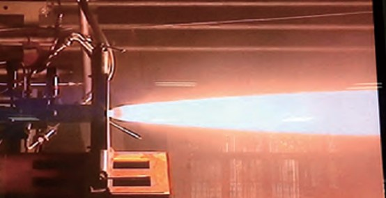
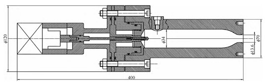

Home
Home
Liquid rocket engine is the most important type of power device in the space field at present, which
undertakes the tasks of spacecraft entering space, space maintaining and returning to the ground. With
the development of space missions, the content and form of human entering space and returning to the
ground have also increased greatly, which puts forward higher variable thrust requirements for the
traditional liquid rocket engine. Variable thrust liquid rocket engines can be used for interplanetary
orbit and landing, space rendezvous, orbital maneuvering, and hovering and risk avoidance during
interplanetary landing. Other applications include thrust control of aircraft rocket engines, orbit control
of ballistic defense missiles, and stage transfer (transition) of combined engines, etc. With the rapid
development of China's space industry, Variable thrust engines with various thrust adjustment forms and
different thrust ranges are needed.
The research group has carried out a lot of research on the structural design, thermal protection and
ignition mode of variable thrust engine. A wide range propellant supply system scheme was developed,
and a gas-oxygen/kerosene variable thrust rocket engine based on a mechanical positioning double
modulation system was developed. The results of ground ignition tests verified:
• Designed variable thrust rocket engine to achieve stable combustion in the working range
• The actual chamber pressure varies from 0.26 to 4.35MPa.
• The thrust varies from 57.30 to 864.70N.
• Thrust ratio of 15.1:1.
• The combustion efficiency is more than 90% in most working conditions, and the highest is 97.14%.
• The flow control valve can precisely adjust the propellant flow rate, and the pin injector can actively
control the injection pressure drop to achieve the expected goal of the mechanical positioning double
regulation system.
Rocket engine thermal testing
Rocket engine thermal testing
Schematic diagram of the combustion chamber
Featured articles
[1]靳雨树,徐旭,朱韶华,等.15:1气氧/煤油变推力火箭发动机设计及试验[J].推进技术,2018,39(11):2438-2445. DOI:10.13675/j.cnki.tjjs. 2018.11.004.